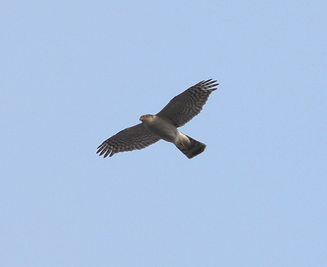

새매

주요특징 및 설명
종명: 새매(sparrow hawk)
학명: Gobiobotia brevibarba
생물학적 분류: 수리과 새매속
분포: 한국, 일본, 시베리아
등급: 멸종위기종 Ⅱ급, 천연기념물 제323호
주요 특징
북부 지역에서 번식하는 집단은 중국 남부나 등지에서 겨울을 나고, 우리나라를 포함한 남부에서 번식하는 집단은 텃새로
산다. 암수 모두 흰 눈썹선이 있고, 암컷이 수컷보다 더 크다.